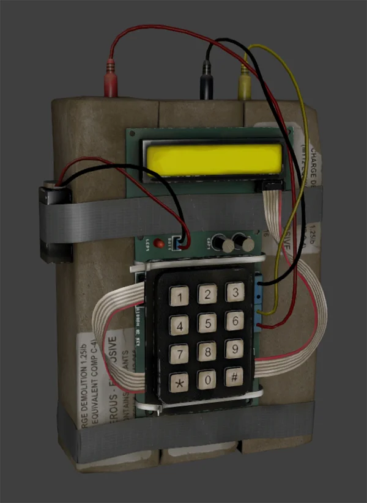

How are you?
I am an Anarchist
I love AK47 & Molotov.
SKILLS & SPECIALTIES

Demolitions / Tactical Assault
Cold, focused, and highly efficient under pressure.
Shows no emotion during missions.
Known for calculated aggression and high-value eliminations.
Sabotage & Electronic Disruption
Expert in disabling surveillance systems, jamming comms, and setting traps.
Often the first in to quietly compromise enemy defenses before the main strike.

Get in Touch
If you need a job done fast, clean, and quiet you know who to call.
comms only. No names. No traces.
Contact Me